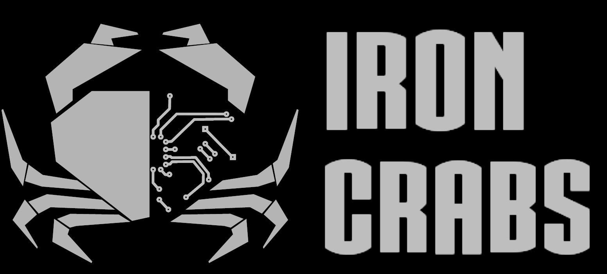

This is the main page for controling the awesome Hexapod you are connect to.
Your option are :
The first page allow you to see the actual Hexapod state.
You can see all node status. A node is a sensor or actuator connected on the robot bus.
Actually you can see just motors.
You can see in real time motor position, speed, temperature and torque.
The second page permit you to remotely control the Hexapod.
Use the arrow on the screen to move the robot.
You can see the feedback on the camera flow